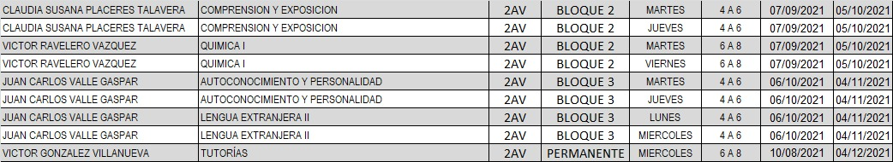
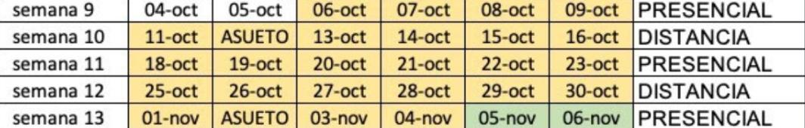

Asistencia a las aulas
La asistencia a clases semi presenciales empezara el lunes 4 de agosto con un modelo hibrido en el cual se separara al grupo en 2 partes iguales en donde al primer grupo será llamado "A1" y al segundo "A2" antes de entrar a presenciales se les hará llegar su horario como el siguiente: "Imagen más abajo" en donde podremos ver la materia junto a su respectivo maestro y horario que normalmente será de 2 horas.

Normalmente por grupo se tendrán cuatro materias respectivas las cuales serían: 2 materias Curriculares como Español y matemáticas, y las otras 2 extra curriculares las cuales serían tutorías y TAES (la anterior solo en caso de ser de tercer semestre en adelante).
Semanas
|
Para conseguir el modelo hibrido que desea la UdeG se dividirán los cursos en 4 semanas siendo separada 2 en semi presenciales y 2 en modalidad en línea alternando 1 y 1 como se muestra en la siguiente imagen: "Imagen más abajo", modelos los cuales serán presentados a continuación:

|
|
Presenciales
|
Curriculares:
En esta se tendrán 4 clases (2 de cada materia) en las cuales la primera de las dos clases será tomada por el grupo "A1" y la segunda por el grupo "A2"
Por ejemplo:
Se tiene el siguiente horario: Lunes: Español, Martes: Español, Miércoles: Matemáticas, Jueves: Matemáticas.
El grupo "A1" se presentara solamente en la primera clase de cada materia, es decir, que el grupo "A1" Asistirá a la clase se Español el lunes y la de matemáticas el miércoles siendo estas las primeras en la semana, por lo tanto, el grupo "A2" deberá asistir a las segundas clases de las materias, es decir, deberá asistir a la clase de Español el martes y a la clase de Matemáticas el jueves.
|
|
Tutoria y TAES
|
Tutorías:
Las tutorías se tendrán solamente 1 ves por semana siendo esta siempre en modalidad en línea,
TAES:
(Estas solo serán tomadas por los de 3er semestre en adelante), esta se tomara 1 ves a la semana usualmente siendo este día el sábado y se alternara la asistencia entre los dos grupos "A1" y "A2" una semana si y otra no tomando la primera semana el grupo "A1" y la segunda el "A2".
Que pasa cuando el otro grupo está en presencial y yo no?
Esto es muy simple! ya que la modalidad es hibrida las actividades y tareas serán enviadas por medio de classroom (o por el medio que usualmente tome el maestro) por lo que podrás subir tus actividades por ahí y podrás resolver tus dudas por el medio presencial de clase, por ejemplo, mientras el grupo A1 toma clase por medio presencial tu estarás realizando las actividades del mismo tema en la plataforma de classroom.
|
|
Línea:
|
La semana en línea será exactamente como se ha estado haciendo durante el semestre (o los semestres anteriores) por medio de clases en línea, donde, ambos grupos "A1 y A2" tomaran juntos todas las clases que se tengan en la semana por medio de video llamada con tu profesor y subiendo tus actividades a classroom (o la plataforma por excelencia de tu profesor).
Como asistiremos?
Para asistir presencialmente a la preparatoria deberás llevar por lo menos dos cubre bocas preferiblemente de los siguientes modelos: triple capa, KN95 y quirúrgicos. Y evitando los siguientes modelos: KN95 con filtro y/o cubre bocas de tela.
También deberás asistir con tu camiseta seleccionada por tu preparatoria usando el modelo indicado por la misma en los días indicados.
También de ser posible podrías asistir con una careta de plástico.
|
|
Preguntas frecuentes:
Esta información es tuya?
Si, esta si.
Cuándo crearas tu propio contenido?
Lastimosamente eso no lo tenemos planeado dentro de poco ya que nuestro equipo tiene otras actividades en su día a día como por ejemplo los estudios por lo que no es sencillo juntarlo con la creación de contenido.
Cómo puedo apoyar este sitio web?
Apoyarlo es muy fácil! Simplemente compártela con tu familia y amigos.

 Inncreat/Colaborador
Inncreat/Colaborador